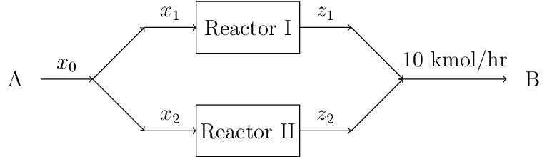

1.6. Integer Programs#
# This code cell installs packages on Colab
import sys
if "google.colab" in sys.modules:
!wget "https://raw.githubusercontent.com/ndcbe/optimization/main/notebooks/helper.py"
import helper
helper.easy_install()
else:
sys.path.insert(0, '../')
import helper
helper.set_plotting_style()
1.6.1. Optimizing Across Process Alternatives#
Reference: Example 15.3 from Biegler, Grossmann, Westerberg (1997). See handout
Assume that we have the choice of selecting two reactors (shown below) for the reaction \(A \rightarrow B\). Reactor I has a higher conversation (80%) but it is more expensive; reactor II has a lower conversion (66.7%) but is cheaper. The cost of feed \(A\) is $5/kmol. Which process alternative (reactor I, reactor II, or both) has the minimum costs to make 10 kmol/hr of product B?
Let \(x_r\) be the size (flowrate into) of reactor \(r\).
Continuous cost model: \(C = \underbrace{c_r (x_r)^{0.6}}_{\text{reactor}} + \underbrace{5.0 x_r}_{\text{feed}}\)
1.6.1.1. Develop the Optimization Model#
Draw a Picture

Sets
Click to expand
Reactors: \(\mathcal{R} = \{1,2\}\)
Parameters
Click to expand
Reactor cost coefficient: \(c_r\)
\(c_1 = 5.5\) \(\frac{\$}{\text{hr}}\)
\(c_2 = 4.0\) \(\frac{\$}{\text{hr}}\)
Reactor conversion: \(\theta_r\)
\(\theta_1 = 0.8\)
\(\theta_2 = 0.67\)
Feed cost: \(\Omega = 5\) \(\frac{\$}{\text{kmol}}\)
Product flowrate: \(F = 10\) \(\frac{\text{kmol}}{\text{hr}}\)
Variables
Click to expand
Total feed flowrate: \(x_0\)
Reactor feed flowrate: \(x_r, \quad \forall r \in \mathcal{R}\)
Reactor effluent: \(z_r, \quad \forall r \in \mathcal{R}\)
Objective
Click to expand
Minimize Total Cost
\( C = \sum_{r \in \mathcal{R}} c_r (x_r)^{0,6} + \Omega x_0 = \underbrace{5.5 (x_1)^{0.6}}_{\text{reactor I}} + \underbrace{4.0 (x_2)^{0.6}}_{\text{reactor II}} + \underbrace{5.0 x_0}_{\text{feed}}\)
Constraints
Click to expand
Reaction: \(A \rightarrow B\)
Mass Balances:
Initial split : \(x_0 = x_1 + x_2\)
Reactors (using set notation): \(z_r = \theta_r x_r, \quad \forall r \in \mathcal{R}\)
Reactor I: \(z_1 = \underbrace{0.8}_{\theta_1} x_1\)
Reactor II: \(z_2 = \underbrace{0.67}_{\theta_2} x_2\)
Final mixer: \(z_1 + z_2 = \underbrace{10}_{F}\)
Bounds:
\(x_i \geq 0, \quad \forall r \in \mathcal{R}\)
\(z_i \geq 0, \quad \forall r \in \mathcal{R}\)
Degree of Freedom Analysis
Click to expand
Continuous variables: 5
Equality constraints: 4
1.6.1.2. Solve with Continuous Cost Model in Pyomo#
We start my defining the model in Pyomo.
import pyomo.environ as pyo
nlp = pyo.ConcreteModel()
## Define sets
nlp.REACTORS = pyo.Set(initialize=range(1,3))
## Define parameters (data)
# $ / hr
cost_coefficient = {1:5.5, 2:4.0}
nlp.reactor_cost = pyo.Param(nlp.REACTORS, initialize=cost_coefficient)
# kmol/hr B
nlp.product_flowrate = pyo.Param(initialize=10.0)
# conversion fraction
reactor_conversion = {1:0.8, 2:0.67}
nlp.conversion = pyo.Param(nlp.REACTORS, initialize=reactor_conversion)
# feed cost, $/kmol of A
nlp.feed_cost = pyo.Param(initialize=5.0)
## Define variables
# Feed flowrate into reactor, x0 in handout illustration
nlp.feed_flowrate = pyo.Var(domain=pyo.NonNegativeReals)
# Reactor feed, x1 and x2 in handout illustration
nlp.reactor_feed = pyo.Var(nlp.REACTORS, domain=pyo.NonNegativeReals)
# Reactor effluent (outlet), z1 and z2 in handout illustration
nlp.reactor_effluent = pyo.Var(nlp.REACTORS, domain=pyo.NonNegativeReals)
## Define constraints
# Add your solution here
## Define objective
nlp.cost = pyo.Objective(expr=sum(nlp.reactor_cost[r] * (nlp.reactor_feed[r])**(0.6) for r in nlp.REACTORS) +
nlp.feed_cost * nlp.feed_flowrate)
nlp.pprint()
1 Set Declarations
REACTORS : Size=1, Index=None, Ordered=Insertion
Key : Dimen : Domain : Size : Members
None : 1 : Any : 2 : {1, 2}
4 Param Declarations
conversion : Size=2, Index=REACTORS, Domain=Any, Default=None, Mutable=False
Key : Value
1 : 0.8
2 : 0.67
feed_cost : Size=1, Index=None, Domain=Any, Default=None, Mutable=False
Key : Value
None : 5.0
product_flowrate : Size=1, Index=None, Domain=Any, Default=None, Mutable=False
Key : Value
None : 10.0
reactor_cost : Size=2, Index=REACTORS, Domain=Any, Default=None, Mutable=False
Key : Value
1 : 5.5
2 : 4.0
3 Var Declarations
feed_flowrate : Size=1, Index=None
Key : Lower : Value : Upper : Fixed : Stale : Domain
None : 0 : None : None : False : True : NonNegativeReals
reactor_effluent : Size=2, Index=REACTORS
Key : Lower : Value : Upper : Fixed : Stale : Domain
1 : 0 : None : None : False : True : NonNegativeReals
2 : 0 : None : None : False : True : NonNegativeReals
reactor_feed : Size=2, Index=REACTORS
Key : Lower : Value : Upper : Fixed : Stale : Domain
1 : 0 : None : None : False : True : NonNegativeReals
2 : 0 : None : None : False : True : NonNegativeReals
1 Objective Declarations
cost : Size=1, Index=None, Active=True
Key : Active : Sense : Expression
None : True : minimize : 5.5*reactor_feed[1]**0.6 + 4.0*reactor_feed[2]**0.6 + 5.0*feed_flowrate
3 Constraint Declarations
inlet_split : Size=1, Index=None, Active=True
Key : Lower : Body : Upper : Active
None : 0.0 : feed_flowrate - (reactor_feed[1] + reactor_feed[2]) : 0.0 : True
mixer : Size=1, Index=None, Active=True
Key : Lower : Body : Upper : Active
None : 10.0 : reactor_effluent[1] + reactor_effluent[2] : 10.0 : True
reactor_performance : Size=2, Index=REACTORS, Active=True
Key : Lower : Body : Upper : Active
1 : 0.0 : reactor_effluent[1] - 0.8*reactor_feed[1] : 0.0 : True
2 : 0.0 : reactor_effluent[2] - 0.67*reactor_feed[2] : 0.0 : True
12 Declarations: REACTORS reactor_cost product_flowrate conversion feed_cost feed_flowrate reactor_feed reactor_effluent inlet_split reactor_performance mixer cost
Click to seel the solution to the activity
# mass balance over splitter
nlp.inlet_split = pyo.Constraint(expr=nlp.feed_flowrate == sum(nlp.reactor_feed[r] for r in nlp.REACTORS))
# reactor conversion
def rule_reactor(m, r):
return m.reactor_effluent[r] == m.conversion[r] * m.reactor_feed[r]
nlp.reactor_performance = pyo.Constraint(nlp.REACTORS, rule=rule_reactor)
# mass balance over mixer meets product requirements
nlp.mixer = pyo.Constraint(expr=nlp.product_flowrate == sum(nlp.reactor_effluent[r] for r in nlp.REACTORS))
1.6.1.3. Initialize to Favor Reaction 1 and Solve#
def initialize(model, reactor_choice=1):
''' Initialize all of the variables in the model to demonstrate local solutions
Arguments:
model: Pyomo model
reactor_choice: 1 or 2
Returns:
nothing
Action:
initializes model
'''
# Guess 20 kmol/hr feed of A
model.feed_flowrate = 20.0
# Either assign all of the feed to reactor 1 or 2
if reactor_choice == 1:
model.reactor_feed[1] = 20.0
model.reactor_feed[2] = 0
elif reactor_choice == 2:
model.reactor_feed[1] = 0
model.reactor_feed[2] = 20.0
else:
raise ValueError("Argument reactor_choice needs value 1 or 2.")
# Based on the feed assignments, calculate effluent flowrate
for r in model.REACTORS:
model.reactor_effluent[r] = model.reactor_feed[r]() * model.conversion[r]
initialize(nlp, reactor_choice=1)
nlp.pprint()
1 Set Declarations
REACTORS : Size=1, Index=None, Ordered=Insertion
Key : Dimen : Domain : Size : Members
None : 1 : Any : 2 : {1, 2}
4 Param Declarations
conversion : Size=2, Index=REACTORS, Domain=Any, Default=None, Mutable=False
Key : Value
1 : 0.8
2 : 0.67
feed_cost : Size=1, Index=None, Domain=Any, Default=None, Mutable=False
Key : Value
None : 5.0
product_flowrate : Size=1, Index=None, Domain=Any, Default=None, Mutable=False
Key : Value
None : 10.0
reactor_cost : Size=2, Index=REACTORS, Domain=Any, Default=None, Mutable=False
Key : Value
1 : 5.5
2 : 4.0
3 Var Declarations
feed_flowrate : Size=1, Index=None
Key : Lower : Value : Upper : Fixed : Stale : Domain
None : 0 : 20.0 : None : False : False : NonNegativeReals
reactor_effluent : Size=2, Index=REACTORS
Key : Lower : Value : Upper : Fixed : Stale : Domain
1 : 0 : 16.0 : None : False : False : NonNegativeReals
2 : 0 : 0.0 : None : False : False : NonNegativeReals
reactor_feed : Size=2, Index=REACTORS
Key : Lower : Value : Upper : Fixed : Stale : Domain
1 : 0 : 20.0 : None : False : False : NonNegativeReals
2 : 0 : 0 : None : False : False : NonNegativeReals
1 Objective Declarations
cost : Size=1, Index=None, Active=True
Key : Active : Sense : Expression
None : True : minimize : 5.5*reactor_feed[1]**0.6 + 4.0*reactor_feed[2]**0.6 + 5.0*feed_flowrate
3 Constraint Declarations
inlet_split : Size=1, Index=None, Active=True
Key : Lower : Body : Upper : Active
None : 0.0 : feed_flowrate - (reactor_feed[1] + reactor_feed[2]) : 0.0 : True
mixer : Size=1, Index=None, Active=True
Key : Lower : Body : Upper : Active
None : 10.0 : reactor_effluent[1] + reactor_effluent[2] : 10.0 : True
reactor_performance : Size=2, Index=REACTORS, Active=True
Key : Lower : Body : Upper : Active
1 : 0.0 : reactor_effluent[1] - 0.8*reactor_feed[1] : 0.0 : True
2 : 0.0 : reactor_effluent[2] - 0.67*reactor_feed[2] : 0.0 : True
12 Declarations: REACTORS reactor_cost product_flowrate conversion feed_cost feed_flowrate reactor_feed reactor_effluent inlet_split reactor_performance mixer cost
Now let’s solve the model.
solver = pyo.SolverFactory('ipopt')
results = solver.solve(nlp, tee=True)
Error evaluating "var =" definition -1: can't evaluate pow'(0,0.6).
Ipopt 3.13.2:
******************************************************************************
This program contains Ipopt, a library for large-scale nonlinear optimization.
Ipopt is released as open source code under the Eclipse Public License (EPL).
For more information visit http://projects.coin-or.org/Ipopt
This version of Ipopt was compiled from source code available at
https://github.com/IDAES/Ipopt as part of the Institute for the Design of
Advanced Energy Systems Process Systems Engineering Framework (IDAES PSE
Framework) Copyright (c) 2018-2019. See https://github.com/IDAES/idaes-pse.
This version of Ipopt was compiled using HSL, a collection of Fortran codes
for large-scale scientific computation. All technical papers, sales and
publicity material resulting from use of the HSL codes within IPOPT must
contain the following acknowledgement:
HSL, a collection of Fortran codes for large-scale scientific
computation. See http://www.hsl.rl.ac.uk.
******************************************************************************
This is Ipopt version 3.13.2, running with linear solver ma27.
Number of nonzeros in equality constraint Jacobian...: 9
Number of nonzeros in inequality constraint Jacobian.: 0
Number of nonzeros in Lagrangian Hessian.............: 2
ERROR: Solver (ipopt) returned non-zero return code (1)
ERROR: See the solver log above for diagnostic information.
---------------------------------------------------------------------------
ApplicationError Traceback (most recent call last)
Cell In[4], line 2
1 solver = pyo.SolverFactory('ipopt')
----> 2 results = solver.solve(nlp, tee=True)
File ~/anaconda3/envs/controls/lib/python3.10/site-packages/pyomo/opt/base/solvers.py:627, in OptSolver.solve(self, *args, **kwds)
625 elif hasattr(_status, 'log') and _status.log:
626 logger.error("Solver log:\n" + str(_status.log))
--> 627 raise ApplicationError("Solver (%s) did not exit normally" % self.name)
628 solve_completion_time = time.time()
629 if self._report_timing:
ApplicationError: Solver (ipopt) did not exit normally
What happened? \(0^{0.6}\) is not well defined. Work around? Let’s set the lower bound to something really small:
small_number = 1E-6
for r in nlp.REACTORS:
# Set lower bound
nlp.reactor_feed[r].setlb(small_number)
# Adjust initial point if needed
nlp.reactor_feed[r] = max(nlp.reactor_feed[r](), small_number)
nlp.pprint()
1 Set Declarations
REACTORS : Size=1, Index=None, Ordered=Insertion
Key : Dimen : Domain : Size : Members
None : 1 : Any : 2 : {1, 2}
4 Param Declarations
conversion : Size=2, Index=REACTORS, Domain=Any, Default=None, Mutable=False
Key : Value
1 : 0.8
2 : 0.67
feed_cost : Size=1, Index=None, Domain=Any, Default=None, Mutable=False
Key : Value
None : 5.0
product_flowrate : Size=1, Index=None, Domain=Any, Default=None, Mutable=False
Key : Value
None : 10.0
reactor_cost : Size=2, Index=REACTORS, Domain=Any, Default=None, Mutable=False
Key : Value
1 : 5.5
2 : 4.0
3 Var Declarations
feed_flowrate : Size=1, Index=None
Key : Lower : Value : Upper : Fixed : Stale : Domain
None : 0 : 20.0 : None : False : False : NonNegativeReals
reactor_effluent : Size=2, Index=REACTORS
Key : Lower : Value : Upper : Fixed : Stale : Domain
1 : 0 : 16.0 : None : False : False : NonNegativeReals
2 : 0 : 0.0 : None : False : False : NonNegativeReals
reactor_feed : Size=2, Index=REACTORS
Key : Lower : Value : Upper : Fixed : Stale : Domain
1 : 1e-06 : 20.0 : None : False : False : NonNegativeReals
2 : 1e-06 : 1e-06 : None : False : False : NonNegativeReals
1 Objective Declarations
cost : Size=1, Index=None, Active=True
Key : Active : Sense : Expression
None : True : minimize : 5.5*reactor_feed[1]**0.6 + 4.0*reactor_feed[2]**0.6 + 5.0*feed_flowrate
3 Constraint Declarations
inlet_split : Size=1, Index=None, Active=True
Key : Lower : Body : Upper : Active
None : 0.0 : feed_flowrate - (reactor_feed[1] + reactor_feed[2]) : 0.0 : True
mixer : Size=1, Index=None, Active=True
Key : Lower : Body : Upper : Active
None : 10.0 : reactor_effluent[1] + reactor_effluent[2] : 10.0 : True
reactor_performance : Size=2, Index=REACTORS, Active=True
Key : Lower : Body : Upper : Active
1 : 0.0 : reactor_effluent[1] - 0.8*reactor_feed[1] : 0.0 : True
2 : 0.0 : reactor_effluent[2] - 0.67*reactor_feed[2] : 0.0 : True
12 Declarations: REACTORS reactor_cost product_flowrate conversion feed_cost feed_flowrate reactor_feed reactor_effluent inlet_split reactor_performance mixer cost
Now let’s resolve:
solver = pyo.SolverFactory('ipopt')
results = solver.solve(nlp, tee=True)
Ipopt 3.13.2:
******************************************************************************
This program contains Ipopt, a library for large-scale nonlinear optimization.
Ipopt is released as open source code under the Eclipse Public License (EPL).
For more information visit http://projects.coin-or.org/Ipopt
This version of Ipopt was compiled from source code available at
https://github.com/IDAES/Ipopt as part of the Institute for the Design of
Advanced Energy Systems Process Systems Engineering Framework (IDAES PSE
Framework) Copyright (c) 2018-2019. See https://github.com/IDAES/idaes-pse.
This version of Ipopt was compiled using HSL, a collection of Fortran codes
for large-scale scientific computation. All technical papers, sales and
publicity material resulting from use of the HSL codes within IPOPT must
contain the following acknowledgement:
HSL, a collection of Fortran codes for large-scale scientific
computation. See http://www.hsl.rl.ac.uk.
******************************************************************************
This is Ipopt version 3.13.2, running with linear solver ma27.
Number of nonzeros in equality constraint Jacobian...: 9
Number of nonzeros in inequality constraint Jacobian.: 0
Number of nonzeros in Lagrangian Hessian.............: 2
Total number of variables............................: 5
variables with only lower bounds: 5
variables with lower and upper bounds: 0
variables with only upper bounds: 0
Total number of equality constraints.................: 4
Total number of inequality constraints...............: 0
inequality constraints with only lower bounds: 0
inequality constraints with lower and upper bounds: 0
inequality constraints with only upper bounds: 0
iter objective inf_pr inf_du lg(mu) ||d|| lg(rg) alpha_du alpha_pr ls
0 1.3344037e+02 6.01e+00 8.32e-01 -1.0 0.00e+00 - 0.00e+00 0.00e+00 0
1 8.9498771e+01 1.78e-15 1.11e+01 -1.0 7.77e+00 - 4.44e-02 1.00e+00f 1
2 8.9572341e+01 1.78e-15 5.52e+00 -1.0 4.18e-02 - 9.98e-01 5.00e-01f 2
3 8.9546293e+01 1.78e-15 8.09e-05 -1.0 7.46e-03 - 1.00e+00 1.00e+00f 1
4 8.7594136e+01 1.78e-15 5.50e+00 -2.5 5.48e-01 - 9.88e-01 6.12e-01f 1
5 8.7593412e+01 0.00e+00 1.87e-01 -2.5 1.87e-05 4.0 1.00e+00 1.00e+00f 1
6 8.7589094e+01 1.78e-15 2.70e-02 -2.5 1.08e-04 - 1.00e+00 1.00e+00f 1
7 8.7533830e+01 1.78e-15 8.54e+01 -3.8 1.31e-03 - 1.00e+00 6.28e-01f 1
8 8.7542171e+01 1.78e-15 2.02e+02 -3.8 8.12e-05 - 2.29e-03 5.00e-01f 2
9 8.7536494e+01 1.78e-15 1.91e+01 -3.8 3.28e-05 5.3 1.00e+00 1.00e+00f 1
iter objective inf_pr inf_du lg(mu) ||d|| lg(rg) alpha_du alpha_pr ls
10 8.7535635e+01 8.47e-22 7.35e+00 -3.8 6.31e-06 5.8 1.00e+00 5.00e-01f 2
11 8.7536085e+01 1.78e-15 8.56e-01 -3.8 1.58e-06 - 1.00e+00 1.00e+00f 1
12 8.7536020e+01 1.78e-15 1.36e-02 -3.8 2.39e-07 - 1.00e+00 1.00e+00f 1
13 8.7536022e+01 1.78e-15 1.73e-05 -3.8 8.30e-09 - 1.00e+00 1.00e+00h 1
14 8.7533756e+01 1.78e-15 3.24e+01 -5.7 1.03e-05 - 1.00e+00 5.98e-01f 1
15 8.7533783e+01 1.78e-15 5.52e-02 -5.7 4.47e-08 - 1.00e+00 1.00e+00f 1
16 8.7533768e+01 1.78e-15 1.74e-02 -5.7 2.57e-08 - 1.00e+00 1.00e+00f 1
17 8.7533768e+01 0.00e+00 1.13e-07 -5.7 6.42e-11 - 1.00e+00 1.00e+00h 1
18 8.7533756e+01 0.00e+00 6.30e-02 -8.6 1.93e-08 - 1.00e+00 9.76e-01f 1
19 8.7533756e+01 1.78e-15 1.79e-08 -8.6 2.50e-11 - 1.00e+00 1.00e+00f 1
iter objective inf_pr inf_du lg(mu) ||d|| lg(rg) alpha_du alpha_pr ls
20 8.7533756e+01 1.78e-15 7.27e-09 -9.0 1.59e-11 - 1.00e+00 1.00e+00h 1
Number of Iterations....: 20
(scaled) (unscaled)
Objective...............: 1.4519923356722007e+01 8.7533756319141730e+01
Dual infeasibility......: 7.2660668593016453e-09 4.3803683410370973e-08
Constraint violation....: 1.7763568394002505e-15 1.7763568394002505e-15
Complementarity.........: 9.0911618532142856e-10 5.4806318653791501e-09
Overall NLP error.......: 7.2660668593016453e-09 4.3803683410370973e-08
Number of objective function evaluations = 24
Number of objective gradient evaluations = 21
Number of equality constraint evaluations = 24
Number of inequality constraint evaluations = 0
Number of equality constraint Jacobian evaluations = 21
Number of inequality constraint Jacobian evaluations = 0
Number of Lagrangian Hessian evaluations = 20
Total CPU secs in IPOPT (w/o function evaluations) = 0.007
Total CPU secs in NLP function evaluations = 0.000
EXIT: Optimal Solution Found.
Now we can print the variable names and values:
def print_solution(model):
'''Print variable names and values
Arguments:
model: Pyomo model
'''
print("Variable Names\t\tValue")
for c in model.component_data_objects(pyo.Var):
print(c.name,"\t\t", pyo.value(c))
print("\nObjective Name\t\tValue")
for c in model.component_data_objects(pyo.Objective):
print(c.name,"\t\t", pyo.value(c))
print_solution(nlp)
Variable Names Value
feed_flowrate 12.500000160876471
reactor_feed[1] 12.499999170867413
reactor_feed[2] 1e-06
reactor_effluent[1] 9.99999933669393
reactor_effluent[2] 6.633060682547189e-07
Objective Name Value
cost 87.53376235430073
1.6.1.4. Initialize to Favor Reaction 2 and Solve#
# Initialize
initialize(nlp, reactor_choice=2)
# Correct for bound
# Note: I would have put this in the initialize function but I wanted to show
# the error in class
for r in nlp.REACTORS:
# Adjust initial point if needed
nlp.reactor_feed[r] = max(nlp.reactor_feed[r](), small_number)
results = solver.solve(nlp, tee=True)
print_solution(nlp)
WARNING (W1002): Setting Var 'reactor_feed[1]' to a numeric value `0` outside
the bounds (1e-06, None).
See also https://pyomo.readthedocs.io/en/stable/errors.html#w1002
Ipopt 3.13.2:
******************************************************************************
This program contains Ipopt, a library for large-scale nonlinear optimization.
Ipopt is released as open source code under the Eclipse Public License (EPL).
For more information visit http://projects.coin-or.org/Ipopt
This version of Ipopt was compiled from source code available at
https://github.com/IDAES/Ipopt as part of the Institute for the Design of
Advanced Energy Systems Process Systems Engineering Framework (IDAES PSE
Framework) Copyright (c) 2018-2019. See https://github.com/IDAES/idaes-pse.
This version of Ipopt was compiled using HSL, a collection of Fortran codes
for large-scale scientific computation. All technical papers, sales and
publicity material resulting from use of the HSL codes within IPOPT must
contain the following acknowledgement:
HSL, a collection of Fortran codes for large-scale scientific
computation. See http://www.hsl.rl.ac.uk.
******************************************************************************
This is Ipopt version 3.13.2, running with linear solver ma27.
Number of nonzeros in equality constraint Jacobian...: 9
Number of nonzeros in inequality constraint Jacobian.: 0
Number of nonzeros in Lagrangian Hessian.............: 2
Total number of variables............................: 5
variables with only lower bounds: 5
variables with lower and upper bounds: 0
variables with only upper bounds: 0
Total number of equality constraints.................: 4
Total number of inequality constraints...............: 0
inequality constraints with only lower bounds: 0
inequality constraints with lower and upper bounds: 0
inequality constraints with only upper bounds: 0
iter objective inf_pr inf_du lg(mu) ||d|| lg(rg) alpha_du alpha_pr ls
0 1.2448375e+02 3.41e+00 8.54e-01 -1.0 0.00e+00 - 0.00e+00 0.00e+00 0
1 9.6785883e+01 0.00e+00 9.38e+00 -1.0 5.37e+00 - 6.58e-02 1.00e+00f 1
2 9.9320862e+01 1.78e-15 2.05e+00 -1.0 2.25e+00 - 1.41e-01 1.00e+00f 1
3 9.9386245e+01 1.78e-15 5.06e-04 -1.0 2.06e-01 - 1.00e+00 1.00e+00f 1
4 9.8712942e+01 1.78e-15 3.67e-02 -1.7 1.26e+00 -2.0 9.62e-01 1.00e+00f 1
5 9.5055675e+01 1.78e-15 3.30e+00 -2.5 5.41e+00 -1.6 1.00e+00 2.76e-01f 1
6 9.4951632e+01 1.78e-15 2.68e+00 -2.5 3.26e-03 2.5 1.00e+00 1.00e+00f 1
7 9.4957287e+01 1.78e-15 1.23e+00 -2.5 2.52e-04 2.9 1.00e+00 5.00e-01f 2
8 9.4955819e+01 0.00e+00 1.75e-03 -2.5 3.33e-05 - 1.00e+00 1.00e+00f 1
9 9.4877882e+01 1.78e-15 8.54e+01 -3.8 1.71e-03 - 1.00e+00 6.18e-01f 1
iter objective inf_pr inf_du lg(mu) ||d|| lg(rg) alpha_du alpha_pr ls
10 9.4886607e+01 1.78e-15 1.19e+02 -3.8 1.30e-04 - 1.66e-03 2.50e-01f 3
11 9.4883285e+01 1.78e-15 9.54e+01 -3.8 6.25e-05 5.1 1.00e+00 2.60e-01f 2
12 9.4881130e+01 2.71e-20 9.72e+01 -3.8 3.54e-05 - 1.00e+00 2.30e-01f 2
13 9.4880984e+01 1.78e-15 3.37e-02 -3.8 4.78e-07 - 1.00e+00 1.00e+00f 1
14 9.4880897e+01 1.78e-15 1.28e-02 -3.8 2.79e-07 - 1.00e+00 1.00e+00f 1
15 9.4880898e+01 1.78e-15 1.69e-06 -3.8 3.12e-09 - 1.00e+00 1.00e+00h 1
16 9.4877775e+01 6.35e-22 3.25e+01 -5.7 1.24e-05 - 1.00e+00 5.96e-01f 1
17 9.4877812e+01 1.06e-22 5.58e-02 -5.7 5.36e-08 - 1.00e+00 1.00e+00f 1
18 9.4877790e+01 0.00e+00 1.77e-02 -5.7 3.10e-08 - 1.00e+00 1.00e+00f 1
19 9.4877790e+01 1.06e-22 1.14e-07 -5.7 7.69e-11 - 1.00e+00 1.00e+00f 1
iter objective inf_pr inf_du lg(mu) ||d|| lg(rg) alpha_du alpha_pr ls
20 9.4877775e+01 1.06e-22 5.31e-02 -8.6 2.31e-08 - 1.00e+00 9.76e-01f 1
21 9.4877775e+01 1.78e-15 1.80e-08 -8.6 2.99e-11 - 1.00e+00 1.00e+00f 1
22 9.4877775e+01 1.78e-15 7.30e-09 -9.0 1.90e-11 - 1.00e+00 1.00e+00h 1
Number of Iterations....: 22
(scaled) (unscaled)
Objective...............: 1.1445915871146484e+01 9.4877774550678950e+01
Dual infeasibility......: 7.2954691177073983e-09 6.0473786631279065e-08
Constraint violation....: 1.7763568394002505e-15 1.7763568394002505e-15
Complementarity.........: 9.0911629756661984e-10 7.5358697453220019e-09
Overall NLP error.......: 7.2954691177073983e-09 6.0473786631279065e-08
Number of objective function evaluations = 32
Number of objective gradient evaluations = 23
Number of equality constraint evaluations = 32
Number of inequality constraint evaluations = 0
Number of equality constraint Jacobian evaluations = 23
Number of inequality constraint Jacobian evaluations = 0
Number of Lagrangian Hessian evaluations = 22
Total CPU secs in IPOPT (w/o function evaluations) = 0.009
Total CPU secs in NLP function evaluations = 0.000
EXIT: Optimal Solution Found.
Variable Names Value
feed_flowrate 14.925372942237043
reactor_feed[1] 1e-06
reactor_feed[2] 14.925371952227968
reactor_effluent[1] 7.920072602986078e-07
reactor_effluent[2] 9.99999920799274
Objective Name Value
cost 94.87778284900739
1.6.1.5. Compare Solutions#
Solution 1 |
Solution 2 |
|
|---|---|---|
Feed Flowrate (kmol/hr) |
12.50 |
14.93 |
Reactor 1 Feed (kmol/hr) |
12.50 |
0 |
Reactor 2 Feed (kmol/hr) |
0 |
14.93 |
Reactor 1 Effluent (kmol/hr) |
10.00 |
0 |
Reactor 2 Effluent (kmol/hr) |
0 |
10.00 |
Cost ($/hr) |
87.54 |
94.88 |
Which solution is better? Why are there multiple solutions?
1.6.1.6. Linearized Discrete Cost Model#
We want to modify the model to:
Easily find the best global solution (reduce impacts of initialization)
Account for the fact there is a minimum reactor size we can purchase
import matplotlib.pyplot as plt
import numpy as np
feed = np.linspace(0, 20, 101)
for reactor in [1, 2]:
if reactor == 1:
c = 5.5
c_linear = 6.4
c_fixed = 7.5
c_feed = 5
color = 'r'
elif reactor == 2:
c = 4.0
c_linear = 6.0
c_fixed = 5.5
color = 'b'
else:
break
cost_continous = c*(feed)**(0.6) + c_feed*feed
cost_linearized = c_linear*feed + c_fixed
plt.plot(feed, cost_continous, label="Reactor " + str(reactor) + " (continuous)", color=color, linestyle='-')
plt.plot(feed, cost_linearized, label="Reactor " + str(reactor) + " (linearized)", color=color, linestyle='--')
plt.legend()
plt.xlabel('Feed Flowrate (kmol/hr)')
plt.ylabel('Cost (\$/hr)')
plt.show()
Define binary variable:
\( y_r = \begin{cases} 1 & \text{if reactor } r \text{ is selected} \\ 0 & \text{otherwise} \end{cases} \)
Add logical constraints to include the maximum flowrate (20 kmol/hr):
\( x_r \leq 20 y_r, \quad \forall r \in \mathcal{R} \)
Thus if \(y_r = 0\), then \(x_r = 0\)
Finally, we can define the new linearized reactor cost model:
Recall that \(x_0 = x_1 + x_2\). Thus, the feed cost is \(5x_0 = 5 x_1 + 5 x_2\).
Putting this all together gives the following MILP optimization problem:
1.6.1.7. Enumerate the solutions#
As an illustration, enumerate through the following four options:
No reactor
Reactor I only
Reactor II only
Reactor I and II only
For each option, ask:
Are the constraints feasible?
What is the objective?
Reactor 1 |
Reactor 2 |
Cost |
|---|---|---|
0 |
0 |
infeasible |
1 |
0 |
87.5 |
0 |
1 |
95.5 |
1 |
1 |
93.0 |
1.6.1.8. Solve with Pyomo#
Create and inspect the model.
milp = pyo.ConcreteModel()
## Define sets
milp.REACTORS = pyo.Set(initialize=range(1,3))
## Define parameters (data)
# kmol/hour
milp.max_flowrate = pyo.Param(initialize=20.0)
# $ / hr
# note: this includes the 5.0 linear feed cost
cost_coefficient1 = {1:6.4, 2:6.0}
milp.reactor_cost_linear = pyo.Param(milp.REACTORS, initialize=cost_coefficient1)
# $
cost_coefficient2 = {1:7.5, 2:5.5}
milp.reactor_cost_fixed = pyo.Param(milp.REACTORS, initialize=cost_coefficient2)
# kmol/hr B
milp.product_flowrate = pyo.Param(initialize=10.0)
# conversion fraction
reactor_conversion = {1:0.8, 2:0.67}
milp.conversion = pyo.Param(milp.REACTORS, initialize=reactor_conversion)
# feed cost, $/kmol of A
milp.feed_cost = pyo.Param(initialize=5.0)
## Define variables
# Feed flowrate into reactor, x0 in handout illustration
milp.feed_flowrate = pyo.Var(domain=pyo.NonNegativeReals, bounds=(0, milp.max_flowrate))
# Reactor feed, x1 and x2 in handout illustration
milp.reactor_feed = pyo.Var(milp.REACTORS, domain=pyo.NonNegativeReals, bounds=(0, milp.max_flowrate))
# Reactor effluent (outlet), z1 and z2 in handout illustration
milp.reactor_effluent = pyo.Var(milp.REACTORS, domain=pyo.NonNegativeReals)
# Boolean variables
# Add your solution here
## Define constraints
# mass balance over splitter
milp.inlet_split = pyo.Constraint(expr=milp.feed_flowrate == sum(milp.reactor_feed[r] for r in milp.REACTORS))
# reactor conversion
def rule_reactor(m, r):
return m.reactor_effluent[r] == m.conversion[r] * m.reactor_feed[r]
milp.reactor_performance = pyo.Constraint(milp.REACTORS, rule=rule_reactor)
# mass balance over mixer meets product requirements
milp.mixer = pyo.Constraint(expr=milp.product_flowrate == sum(milp.reactor_effluent[r] for r in milp.REACTORS))
# logical constraints
# Add your solution here
## Define objective
# Note: our linearization already includes feed costs
# Add your solution here
milp.pprint()
1 Set Declarations
REACTORS : Size=1, Index=None, Ordered=Insertion
Key : Dimen : Domain : Size : Members
None : 1 : Any : 2 : {1, 2}
6 Param Declarations
conversion : Size=2, Index=REACTORS, Domain=Any, Default=None, Mutable=False
Key : Value
1 : 0.8
2 : 0.67
feed_cost : Size=1, Index=None, Domain=Any, Default=None, Mutable=False
Key : Value
None : 5.0
max_flowrate : Size=1, Index=None, Domain=Any, Default=None, Mutable=False
Key : Value
None : 20.0
product_flowrate : Size=1, Index=None, Domain=Any, Default=None, Mutable=False
Key : Value
None : 10.0
reactor_cost_fixed : Size=2, Index=REACTORS, Domain=Any, Default=None, Mutable=False
Key : Value
1 : 7.5
2 : 5.5
reactor_cost_linear : Size=2, Index=REACTORS, Domain=Any, Default=None, Mutable=False
Key : Value
1 : 6.4
2 : 6.0
4 Var Declarations
feed_flowrate : Size=1, Index=None
Key : Lower : Value : Upper : Fixed : Stale : Domain
None : 0 : None : 20.0 : False : True : NonNegativeReals
reactor_boolean : Size=2, Index=REACTORS
Key : Lower : Value : Upper : Fixed : Stale : Domain
1 : 0 : None : 1 : False : True : Boolean
2 : 0 : None : 1 : False : True : Boolean
reactor_effluent : Size=2, Index=REACTORS
Key : Lower : Value : Upper : Fixed : Stale : Domain
1 : 0 : None : None : False : True : NonNegativeReals
2 : 0 : None : None : False : True : NonNegativeReals
reactor_feed : Size=2, Index=REACTORS
Key : Lower : Value : Upper : Fixed : Stale : Domain
1 : 0 : None : 20.0 : False : True : NonNegativeReals
2 : 0 : None : 20.0 : False : True : NonNegativeReals
1 Objective Declarations
cost : Size=1, Index=None, Active=True
Key : Active : Sense : Expression
None : True : minimize : 6.4*reactor_feed[1] + 7.5*reactor_boolean[1] + 6.0*reactor_feed[2] + 5.5*reactor_boolean[2]
4 Constraint Declarations
inlet_split : Size=1, Index=None, Active=True
Key : Lower : Body : Upper : Active
None : 0.0 : feed_flowrate - (reactor_feed[1] + reactor_feed[2]) : 0.0 : True
mixer : Size=1, Index=None, Active=True
Key : Lower : Body : Upper : Active
None : 10.0 : reactor_effluent[1] + reactor_effluent[2] : 10.0 : True
reactor_performance : Size=2, Index=REACTORS, Active=True
Key : Lower : Body : Upper : Active
1 : 0.0 : reactor_effluent[1] - 0.8*reactor_feed[1] : 0.0 : True
2 : 0.0 : reactor_effluent[2] - 0.67*reactor_feed[2] : 0.0 : True
toggle_reactor : Size=2, Index=REACTORS, Active=True
Key : Lower : Body : Upper : Active
1 : -Inf : reactor_feed[1] - 20.0*reactor_boolean[1] : 0.0 : True
2 : -Inf : reactor_feed[2] - 20.0*reactor_boolean[2] : 0.0 : True
16 Declarations: REACTORS max_flowrate reactor_cost_linear reactor_cost_fixed product_flowrate conversion feed_cost feed_flowrate reactor_feed reactor_effluent reactor_boolean inlet_split reactor_performance mixer toggle_reactor cost
Click to seel the solution to the activity
# Boolean variables
milp.reactor_boolean = pyo.Var(milp.REACTORS, domain=pyo.Boolean)
# logical constraints
def rule_toggle_reactor(m, r):
return m.reactor_feed[r] <= m.reactor_boolean[r] * m.max_flowrate
milp.toggle_reactor = pyo.Constraint(milp.REACTORS, rule=rule_toggle_reactor)
# objective
milp.cost = pyo.Objective(expr=sum(milp.reactor_cost_linear[r] * milp.reactor_feed[r] +
milp.reactor_cost_fixed[r] * milp.reactor_boolean[r]
for r in milp.REACTORS) )
Solve the model using cbc, bonmin, gurobi (need license), or cplex (need license).
# Set solver
# solver = pyo.SolverFactory('gurobi')
# solver = pyo.SolverFactory('glpk')
solver = pyo.SolverFactory('cbc')
# solver = pyo.SolverFactory('bonmin')
# Add your solution here
print_solution(milp)
Welcome to the CBC MILP Solver
Version: 2.10.5
Build Date: Apr 19 2021
command line - /Users/adowling/anaconda3/envs/controls/bin/cbc -printingOptions all -import /var/folders/8v/lbvy4xb128d687t1pwzl_cfh0000gp/T/tmprnx7qg9n.pyomo.lp -stat=1 -solve -solu /var/folders/8v/lbvy4xb128d687t1pwzl_cfh0000gp/T/tmprnx7qg9n.pyomo.soln (default strategy 1)
Option for printingOptions changed from normal to all
Presolve 2 (-4) rows, 3 (-4) columns and 4 (-9) elements
Statistics for presolved model
Original problem has 2 integers (2 of which binary)
Presolved problem has 2 integers (2 of which binary)
==== 0 zero objective 3 different
1 variables have objective of 0.64
1 variables have objective of 5.5
1 variables have objective of 7.5
==== absolute objective values 3 different
1 variables have objective of 0.64
1 variables have objective of 5.5
1 variables have objective of 7.5
==== for integers 0 zero objective 2 different
1 variables have objective of 5.5
1 variables have objective of 7.5
==== for integers absolute objective values 2 different
1 variables have objective of 5.5
1 variables have objective of 7.5
===== end objective counts
Problem has 2 rows, 3 columns (3 with objective) and 4 elements
There are 2 singletons with objective
Column breakdown:
0 of type 0.0->inf, 1 of type 0.0->up, 0 of type lo->inf,
0 of type lo->up, 0 of type free, 0 of type fixed,
0 of type -inf->0.0, 0 of type -inf->up, 2 of type 0.0->1.0
Row breakdown:
0 of type E 0.0, 0 of type E 1.0, 0 of type E -1.0,
0 of type E other, 0 of type G 0.0, 0 of type G 1.0,
0 of type G other, 1 of type L 0.0, 0 of type L 1.0,
1 of type L other, 0 of type Range 0.0->1.0, 0 of type Range other,
0 of type Free
Continuous objective value is 84.6875 - 0.00 seconds
Cgl0004I processed model has 2 rows, 3 columns (2 integer (2 of which binary)) and 4 elements
Cbc0038I Initial state - 0 integers unsatisfied sum - 0
Cbc0038I Solution found of 87.5
Cbc0038I Relaxing continuous gives 87.5
Cbc0038I Before mini branch and bound, 2 integers at bound fixed and 1 continuous
Cbc0038I Mini branch and bound did not improve solution (0.00 seconds)
Cbc0038I After 0.00 seconds - Feasibility pump exiting with objective of 87.5 - took 0.00 seconds
Cbc0012I Integer solution of 87.5 found by feasibility pump after 0 iterations and 0 nodes (0.00 seconds)
Cbc0001I Search completed - best objective 87.5, took 0 iterations and 0 nodes (0.00 seconds)
Cbc0035I Maximum depth 0, 0 variables fixed on reduced cost
Cuts at root node changed objective from 87.5 to 87.5
Probing was tried 0 times and created 0 cuts of which 0 were active after adding rounds of cuts (0.000 seconds)
Gomory was tried 0 times and created 0 cuts of which 0 were active after adding rounds of cuts (0.000 seconds)
Knapsack was tried 0 times and created 0 cuts of which 0 were active after adding rounds of cuts (0.000 seconds)
Clique was tried 0 times and created 0 cuts of which 0 were active after adding rounds of cuts (0.000 seconds)
MixedIntegerRounding2 was tried 0 times and created 0 cuts of which 0 were active after adding rounds of cuts (0.000 seconds)
FlowCover was tried 0 times and created 0 cuts of which 0 were active after adding rounds of cuts (0.000 seconds)
TwoMirCuts was tried 0 times and created 0 cuts of which 0 were active after adding rounds of cuts (0.000 seconds)
ZeroHalf was tried 0 times and created 0 cuts of which 0 were active after adding rounds of cuts (0.000 seconds)
Result - Optimal solution found
Objective value: 87.50000000
Enumerated nodes: 0
Total iterations: 0
Time (CPU seconds): 0.00
Time (Wallclock seconds): 0.00
Total time (CPU seconds): 0.00 (Wallclock seconds): 0.00
Variable Names Value
feed_flowrate 12.5
reactor_feed[1] 12.5
reactor_feed[2] 0.0
reactor_effluent[1] 10.0
reactor_effluent[2] 0.0
reactor_boolean[1] 1.0
reactor_boolean[2] 0.0
Objective Name Value
cost 87.5
1.6.2. Is rounding good enough?#
1.6.2.1. Linear Program (Relaxation)#
import pyomo.environ as pyo
m = pyo.ConcreteModel()
# Declare variables with bounds
m.x1 = pyo.Var(domain=pyo.NonNegativeReals)
m.x2 = pyo.Var(domain=pyo.NonNegativeReals)
# Constraint 1
m.con1 = pyo.Constraint(expr=2*m.x1 + m.x2 >= 13)
# Constraint 2
m.con2 = pyo.Constraint(expr=5*m.x1 + 2*m.x2 <= 30)
# Constraint 3
m.con3 = pyo.Constraint(expr=-m.x1 + m.x2 >= 5)
# Objective
m.obj = pyo.Objective(expr=m.x2)
# Print model
m.pprint()
2 Var Declarations
x1 : Size=1, Index=None
Key : Lower : Value : Upper : Fixed : Stale : Domain
None : 0 : None : None : False : True : NonNegativeReals
x2 : Size=1, Index=None
Key : Lower : Value : Upper : Fixed : Stale : Domain
None : 0 : None : None : False : True : NonNegativeReals
1 Objective Declarations
obj : Size=1, Index=None, Active=True
Key : Active : Sense : Expression
None : True : minimize : x2
3 Constraint Declarations
con1 : Size=1, Index=None, Active=True
Key : Lower : Body : Upper : Active
None : 13.0 : 2*x1 + x2 : +Inf : True
con2 : Size=1, Index=None, Active=True
Key : Lower : Body : Upper : Active
None : -Inf : 5*x1 + 2*x2 : 30.0 : True
con3 : Size=1, Index=None, Active=True
Key : Lower : Body : Upper : Active
None : 5.0 : - x1 + x2 : +Inf : True
6 Declarations: x1 x2 con1 con2 con3 obj
# Set solver
# solver = pyo.SolverFactory('gurobi')
# solver = pyo.SolverFactory('glpk')
# solver = pyo.SolverFactory('ipopt')\
solver = pyo.SolverFactory('cbc')
# Solve
solver.solve(m,tee=True)
# Print solution
print(" ")
print("x1 = ",pyo.value(m.x1))
print("x2 = ",pyo.value(m.x2))
Welcome to the CBC MILP Solver
Version: 2.10.5
Build Date: Apr 19 2021
command line - /Users/adowling/anaconda3/envs/controls/bin/cbc -printingOptions all -import /var/folders/8v/lbvy4xb128d687t1pwzl_cfh0000gp/T/tmp936ikgx2.pyomo.lp -stat=1 -solve -solu /var/folders/8v/lbvy4xb128d687t1pwzl_cfh0000gp/T/tmp936ikgx2.pyomo.soln (default strategy 1)
Option for printingOptions changed from normal to all
Presolve 3 (0) rows, 2 (0) columns and 6 (0) elements
Statistics for presolved model
Problem has 3 rows, 2 columns (1 with objective) and 6 elements
Column breakdown:
2 of type 0.0->inf, 0 of type 0.0->up, 0 of type lo->inf,
0 of type lo->up, 0 of type free, 0 of type fixed,
0 of type -inf->0.0, 0 of type -inf->up, 0 of type 0.0->1.0
Row breakdown:
0 of type E 0.0, 0 of type E 1.0, 0 of type E -1.0,
0 of type E other, 0 of type G 0.0, 0 of type G 1.0,
2 of type G other, 0 of type L 0.0, 0 of type L 1.0,
1 of type L other, 0 of type Range 0.0->1.0, 0 of type Range other,
0 of type Free
Presolve 3 (0) rows, 2 (0) columns and 6 (0) elements
0 Obj 0 Primal inf 11.5 (2)
2 Obj 7.6666667
Optimal - objective value 7.6666667
Optimal objective 7.666666667 - 2 iterations time 0.002
Total time (CPU seconds): 0.00 (Wallclock seconds): 0.00
x1 = 2.6666667
x2 = 7.6666667
1.6.2.2. Rounding#
With your neighbor, discuss:
If you round \(x_1\) and \(x_2\) to an integer, are all of the constraints feasible?
How would you go about checking the optimality of a feasible integer solution?
1.6.2.3. Integer Program#
Consider the following integer program:
m2 = pyo.ConcreteModel()
# Declare variables as positive integers
m2.x1 = pyo.Var(domain=pyo.PositiveIntegers)
m2.x2 = pyo.Var(domain=pyo.PositiveIntegers)
# Constraint 1
m2.con1 = pyo.Constraint(expr=2*m2.x1 + m2.x2 >= 13)
# Constraint 2
m2.con2 = pyo.Constraint(expr=5*m2.x1 + 2*m2.x2 <= 30)
# Constraint 3
m2.con3 = pyo.Constraint(expr=-m2.x1 + m2.x2 >= 5)
# Objective
m2.obj = pyo.Objective(expr=m2.x2)
m2.pprint()
2 Var Declarations
x1 : Size=1, Index=None
Key : Lower : Value : Upper : Fixed : Stale : Domain
None : 1 : None : None : False : True : PositiveIntegers
x2 : Size=1, Index=None
Key : Lower : Value : Upper : Fixed : Stale : Domain
None : 1 : None : None : False : True : PositiveIntegers
1 Objective Declarations
obj : Size=1, Index=None, Active=True
Key : Active : Sense : Expression
None : True : minimize : x2
3 Constraint Declarations
con1 : Size=1, Index=None, Active=True
Key : Lower : Body : Upper : Active
None : 13.0 : 2*x1 + x2 : +Inf : True
con2 : Size=1, Index=None, Active=True
Key : Lower : Body : Upper : Active
None : -Inf : 5*x1 + 2*x2 : 30.0 : True
con3 : Size=1, Index=None, Active=True
Key : Lower : Body : Upper : Active
None : 5.0 : - x1 + x2 : +Inf : True
6 Declarations: x1 x2 con1 con2 con3 obj
# Set solver
# solver = pyo.SolverFactory('gurobi')
# solver = pyo.SolverFactory('glpk')
solver = pyo.SolverFactory('cbc')
# solver = pyo.SolverFactory('bonmin')
# Solve
solver.solve(m2,tee=True)
# Print solution
print(" ")
print("x1 = ",m2.x1())
print("x2 = ",m2.x2())
Welcome to the CBC MILP Solver
Version: 2.10.5
Build Date: Apr 19 2021
command line - /Users/adowling/anaconda3/envs/controls/bin/cbc -printingOptions all -import /var/folders/8v/lbvy4xb128d687t1pwzl_cfh0000gp/T/tmpclopbyat.pyomo.lp -stat=1 -solve -solu /var/folders/8v/lbvy4xb128d687t1pwzl_cfh0000gp/T/tmpclopbyat.pyomo.soln (default strategy 1)
Option for printingOptions changed from normal to all
Presolve 3 (0) rows, 2 (0) columns and 6 (0) elements
Statistics for presolved model
Original problem has 2 integers (0 of which binary)
==== 1 zero objective 2 different
1 variables have objective of 0
1 variables have objective of 1
==== absolute objective values 2 different
1 variables have objective of 0
1 variables have objective of 1
==== for integers 1 zero objective 2 different
1 variables have objective of 0
1 variables have objective of 1
==== for integers absolute objective values 2 different
1 variables have objective of 0
1 variables have objective of 1
===== end objective counts
Problem has 3 rows, 2 columns (1 with objective) and 6 elements
Column breakdown:
0 of type 0.0->inf, 0 of type 0.0->up, 2 of type lo->inf,
0 of type lo->up, 0 of type free, 0 of type fixed,
0 of type -inf->0.0, 0 of type -inf->up, 0 of type 0.0->1.0
Row breakdown:
0 of type E 0.0, 0 of type E 1.0, 0 of type E -1.0,
0 of type E other, 0 of type G 0.0, 0 of type G 1.0,
2 of type G other, 0 of type L 0.0, 0 of type L 1.0,
1 of type L other, 0 of type Range 0.0->1.0, 0 of type Range other,
0 of type Free
Continuous objective value is 7.66667 - 0.00 seconds
Cgl0003I 0 fixed, 1 tightened bounds, 0 strengthened rows, 0 substitutions
Cgl0004I processed model has 3 rows, 2 columns (2 integer (0 of which binary)) and 6 elements
Cutoff increment increased from 1e-05 to 0.9999
Cbc0012I Integer solution of 9 found by DiveCoefficient after 0 iterations and 0 nodes (0.00 seconds)
Cbc0006I The LP relaxation is infeasible or too expensive
Cbc0013I At root node, 0 cuts changed objective from 7.6666667 to 7.6666667 in 1 passes
Cbc0014I Cut generator 0 (Probing) - 0 row cuts average 0.0 elements, 1 column cuts (1 active) in 0.000 seconds - new frequency is 1
Cbc0014I Cut generator 1 (Gomory) - 0 row cuts average 0.0 elements, 0 column cuts (0 active) in 0.000 seconds - new frequency is -100
Cbc0014I Cut generator 2 (Knapsack) - 0 row cuts average 0.0 elements, 0 column cuts (0 active) in 0.000 seconds - new frequency is -100
Cbc0014I Cut generator 3 (Clique) - 0 row cuts average 0.0 elements, 0 column cuts (0 active) in 0.000 seconds - new frequency is -100
Cbc0014I Cut generator 4 (MixedIntegerRounding2) - 0 row cuts average 0.0 elements, 0 column cuts (0 active) in 0.000 seconds - new frequency is -100
Cbc0014I Cut generator 5 (FlowCover) - 0 row cuts average 0.0 elements, 0 column cuts (0 active) in 0.000 seconds - new frequency is -100
Cbc0014I Cut generator 6 (TwoMirCuts) - 0 row cuts average 0.0 elements, 0 column cuts (0 active) in 0.000 seconds - new frequency is -100
Cbc0014I Cut generator 7 (ZeroHalf) - 0 row cuts average 0.0 elements, 0 column cuts (0 active) in 0.000 seconds - new frequency is -100
Cbc0001I Search completed - best objective 9, took 0 iterations and 0 nodes (0.00 seconds)
Cbc0035I Maximum depth 0, 0 variables fixed on reduced cost
Cuts at root node changed objective from 7.66667 to 7.66667
Probing was tried 1 times and created 1 cuts of which 0 were active after adding rounds of cuts (0.000 seconds)
Gomory was tried 0 times and created 0 cuts of which 0 were active after adding rounds of cuts (0.000 seconds)
Knapsack was tried 0 times and created 0 cuts of which 0 were active after adding rounds of cuts (0.000 seconds)
Clique was tried 0 times and created 0 cuts of which 0 were active after adding rounds of cuts (0.000 seconds)
MixedIntegerRounding2 was tried 0 times and created 0 cuts of which 0 were active after adding rounds of cuts (0.000 seconds)
FlowCover was tried 0 times and created 0 cuts of which 0 were active after adding rounds of cuts (0.000 seconds)
TwoMirCuts was tried 0 times and created 0 cuts of which 0 were active after adding rounds of cuts (0.000 seconds)
ZeroHalf was tried 0 times and created 0 cuts of which 0 were active after adding rounds of cuts (0.000 seconds)
Result - Optimal solution found
Objective value: 9.00000000
Enumerated nodes: 0
Total iterations: 0
Time (CPU seconds): 0.00
Time (Wallclock seconds): 0.00
Total time (CPU seconds): 0.00 (Wallclock seconds): 0.01
x1 = 2.0
x2 = 9.0
1.6.2.4. Why rounding does not always work#
Reference: http://personal.lse.ac.uk/williahp/publications/wp 10-118.pdf